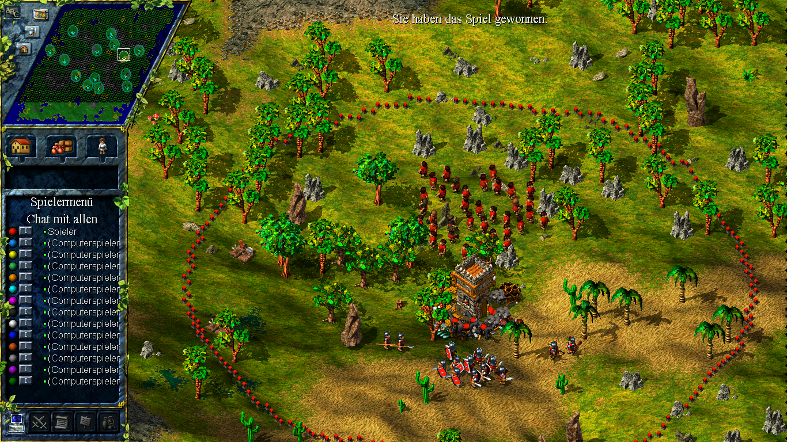

<!-- Due to the June 10, 2020 twitch api change, local twitch embeddings are no longer possible.
     See: https://discuss.dev.twitch.tv/t/twitch-embedded-player-updates-in-2020/23956 -->

<!DOCTYPE html>
<html>
    <head>
        <meta charset="utf-8">
        <title>Settlers 3 - Twitch Cast</title>
        <link rel="icon" type="image/png" href="images/favicon.png"/>
        <link rel="stylesheet" href="style.css">
        <script src="https://ajax.googleapis.com/ajax/libs/jquery/3.5.1/jquery.min.js"></script>
    </head>
    <body>
        <div class="container">
 
            <!--  -->

            <div id="player-1">
                <script src="https://player.twitch.tv/js/embed/v1.js"></script>
                <div id="twitch-player1"></div>
                <script type="text/javascript">
                    var options = {
                    width: 1366,
                    height: 768,
                    allowfullscreen: false,
                    channel: "example",
                    autoplay: true,
                    muted: true,
                    parent: ["streamernews.example.com","embeds.example.com"]
                    };
                    var player = new Twitch.Player("twitch-player1", options);
                    player.setVolume(0.5);
                </script>
            </div>

            <div id="player-2">
                <script src="https://player.twitch.tv/js/embed/v1.js"></script>
                <div id="twitch-player2"></div>
                <script type="text/javascript">
                    var options = {
                    width: 1366,
                    height: 768,
                    allowfullscreen: false,
                    channel: "example",
                    autoplay: true,
                    muted: true,
                    parent: ["streamernews.example.com","embeds.example.com"]
                    };
                    var player = new Twitch.Player("twitch-player2", options);
                    player.setVolume(0.5);
                </script>
            </div>
        </div>

        <script>
            document.body.addEventListener("keydown", function(event) {
                if (event.keyCode == 49) {  // key -> 1
                    document.getElementById("player-2").style.zIndex = "1";
                }
                if (event.keyCode == 50) {  // key -> 2
                    document.getElementById("player-2").style.zIndex = "100";
                }
            })
        </script>
    </body>
</html>
